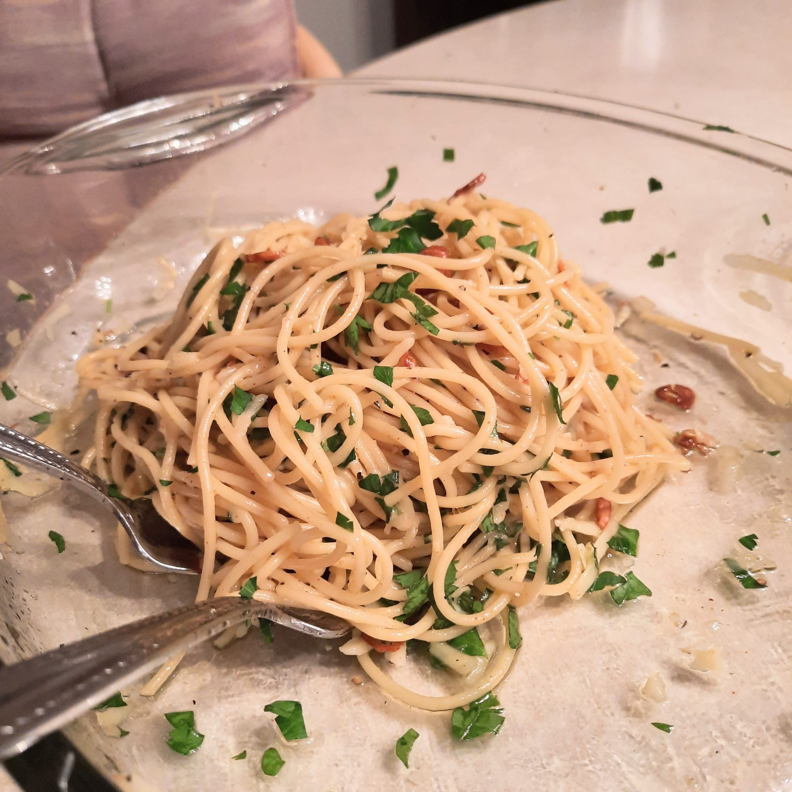

Spaghetti Aglio e Olio

A classic italian recipe with a little bite that goes perfectly with parmesan cheese.
Ingredients
- 1 pound uncooked spaghetti
- 6 cloves garlic, thinly sliced
- 1/2 cup olive oil
- 1/4 teaspoon red pepper flakes, or to taste
- salt and freshly ground black pepper to taste
- 1/2 teaspoon ground black pepper
- 1/4 cup chopped fresh Italian parsley
- 1 cup finely grated Parmigiano-Reggiano cheese
Directions
- Bring a large pot of lightly salted water to a boil.
Cook spaghetti in the boiling water, stirring occasionally
until cooked through but firm to the bite, about 12 minutes.
Drain and transfer to a pasta bowl.
- Combine garlic and olive oil in a cold skillet. Cook over
medium heat to slowly toast garlic, about 10 minutes. Reduce
heat to medium-low when olive oil begins to bubble. Cook and stir
until garlic is golden brown, about another 5 minutes. Remove from heat.
- Stir red pepper flakes, black pepper, and salt into the pasta.
Pour in olive oil and garlic, and sprinkle on Italian parsley and
half of the Parmigiano-Reggiano cheese; stir until combined.
- Serve pasta topped with the remaining Parmigiano-Reggiano cheese.